Hi! I’m Nicole LaBry, recent UX/UI student, senior graphic designer and fine artist. My extant skill set has long included proficiencies in Adobe Creative Suite, illustration, typography, painting and color theory. This year, a logical leap to UX/ UI design was made, leading me on a journey through an intensive curriculum at the University of Texas McCombs School of Business. Prior expertise is now freshly combined with competence in Figma, GitHub, XD and more, providing me with a protean arsenal of creative resources.
Constraints fuel the imagination, and I enjoy the challenge of finding useful solutions that feel both familiar and contemporary. My artistic perspective is kept commensurate with effective results that aim to ultimately appear effortless. I strive to implement an empathy-based approach that bears in mind end-users and stakeholders alike. My roles in UX/ UI have included lead design and content support.
My ideal client knows something about where they want to go, affording me the opportunity to draw a proverbial map. Based in Austin with an insatiable travel bug, I am happy to work on-site locally, remote or, the best of both worlds: within a combination thereof.


 
